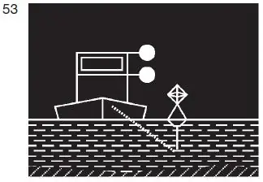
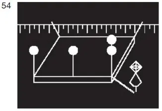
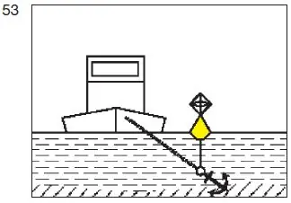
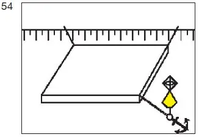
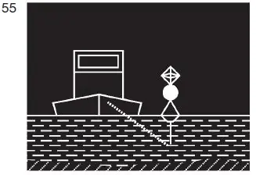
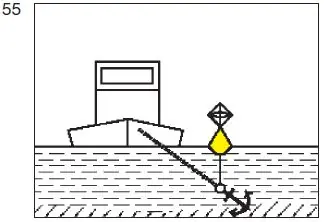

§ 3.26 Zusätzliche Bezeichnung der Fahrzeuge, Schwimmkörperund schwimmenden Anlagen, deren Anker die Schifffahrt gefährden können, und ihrer Anker(Anlage 3: Bild 53, 54, 55)
Binnenschifffahrtsstraßen-Ordnung
1. Ein stillliegendes Fahrzeug, dessen Anker so ausgeworfen sind, dass ein Anker, ein Ankerkabel oder eine Ankerkette die Schifffahrt gefährden kann, muss zusätzlich zu der anderen nach dieser Verordnung vorgeschriebenen Bezeichnung bei Nacht führen:
ein von allen Seiten sichtbares zusätzliches weißes gewöhnliches Licht 1,00 m unter dem Licht nach § 3.20 Nummer 1 oder, wenn zwei Stillliegelichter gesetzt sind, unter dem Licht, das dem Anker am nächsten liegt. |  |
2. Wenn in den Fällen des § 3.23 ein Anker so ausgeworfen ist, dass die Schifffahrt gefährdet sein kann, muss das diesem Anker nächstgelegene Licht durch
zwei von allen Seiten sichtbare weiße gewöhnliche Lichter, die in einem Abstand von 1,00 m übereinander angebracht sind, ersetzt werden. |  |
3. In den Fällen der Nummern 1 und 2 ist jeder dieser Anker mit einem gelben Döpper mit Radarreflektor zu bezeichnen.
 |  |
4. Wenn ein Anker, ein Ankerkabel oder eine Ankerkette eines schwimmenden Gerätes die Schifffahrt gefährden kann, ist er, es oder sie zu bezeichnen:
a) bei Nacht:
durch eine Tonne mit Radarreflektor und einem von allen Seiten sichtbaren weißen gewöhnlichen Licht; |  |
b) bei Tag:
durch einen gelben Döpper mit Radarreflektor. |  |